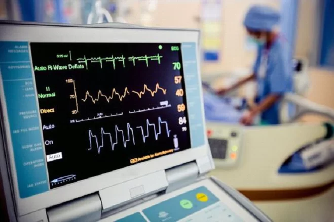

Os avanços recentes no campo da Biomedicina,os sensores biomédicos exercem uma atuação revolucionária. Esses dispositivos estão desempenhando um papel importante na evolução da medicina, com a capacidade de monitorar de perto a saúde, diagnosticar doenças e melhorar os tratamentos. Assim, os sensores estão sendo cada vez mais utilizados no mundo todo, sendo os principais alvos de pesquisas brasileiras as quais têm o potencial de salvar milhares de vidas a partir do diagnóstico precoce de doenças.
Mas afinal, o que são os Sensores Biomédicos?
Os sensores biomédicos são dispositivos eletrônicos especializados em capturar informações relacionadas à saúde e ao funcionamento do corpo humano, possibilitando diagnósticos mais rápidos e tratamentos de forma individualizada. Com a capacidade de detectar e medir sinais biológicos, como temperatura, pressão arterial e batimentos cardíacos, os sensores são usados em diagnósticos médicos, monitoramento de paciente e pesquisas científicas.

E como funcionam os Sensores Biomédicos?
Os sensores biomédicos abrangem uma grande variedade de tipos, cada um projetado para medidas específicas do corpo humano e com diferentes formas de funcionamento.
Sensores de deslocamento: incluem sensores resistivos, indutivos, capacitivos e piezoelétricos.
Sensores de temperatura: incluem termistores e termopares.
Sensores de radiação eletromagnética: incluem detectores térmicos e detectores de fótons.
Sensores EMG: conhecidos como eletromiografia, são usados para avaliar a atividade do potencial de ação da unidade motora em uma região muscular.
Sensores GSR: conhecidos como resposta galvânica da pele, referem-se a mudanças na atividade das glândulas sudoríparas que refletem a intensidade do nosso estado emocional.
E como eles são usados na prática?
Imagine um médico usando esses sensores para confirmar rapidamente um diagnóstico ou para controlar como seu tratamento está,funcionando. Estes são amplamente usados também na telemedicina, onde permitem consultas médicas à distância. Eles são como suas conexões diretas para informações de saúde precisas, onde quer que você esteja.
Os sensores biomédicos são uma parte essencial da revolução tecnológica na área da saúde. Eles capacitaram médicos, pesquisadores e pacientes para obter informações específicas de forma mais precisa e eficaz do que nunca. À medida que a tecnologia continua a avançar, podemos esperar que esses aparatos desempenhem um papel cada vez mais importante na melhoria da saúde, no diagnóstico precoce de doenças e no tratamento personalizado.